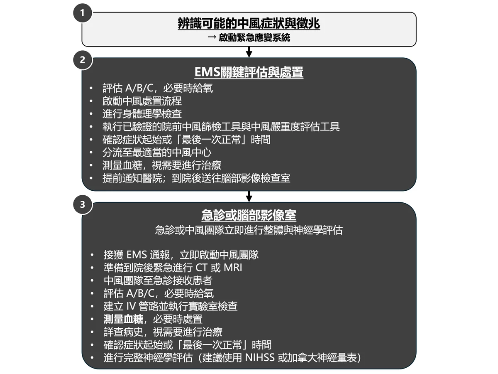
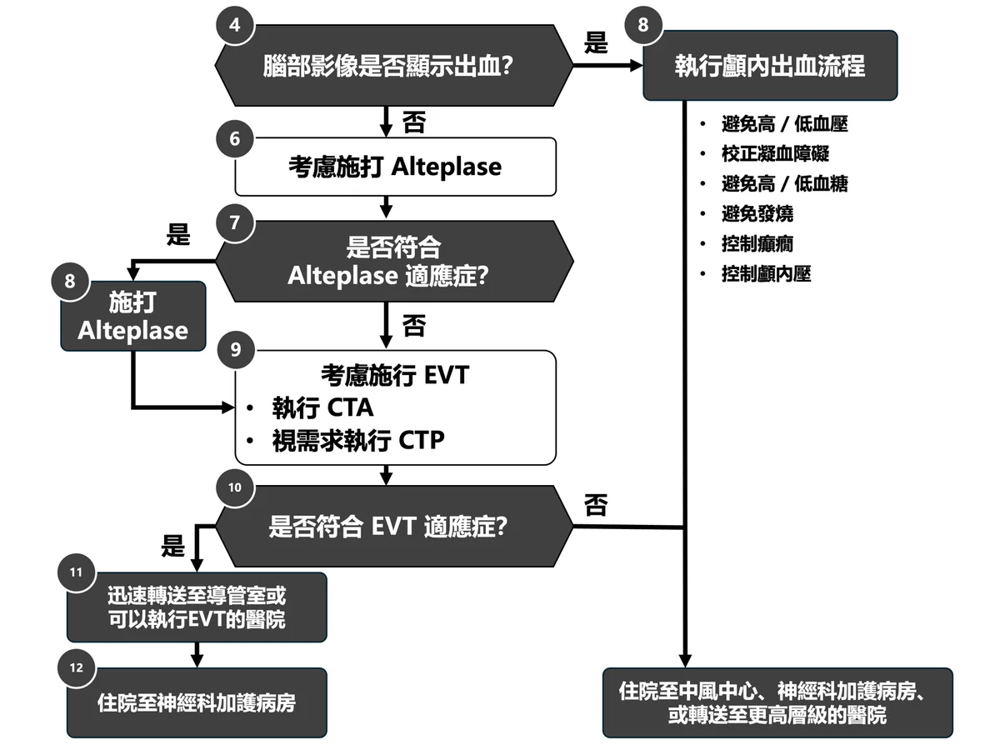
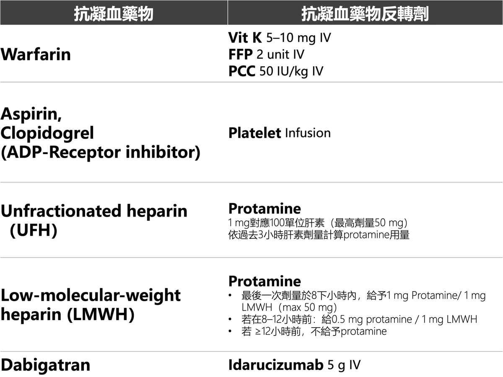
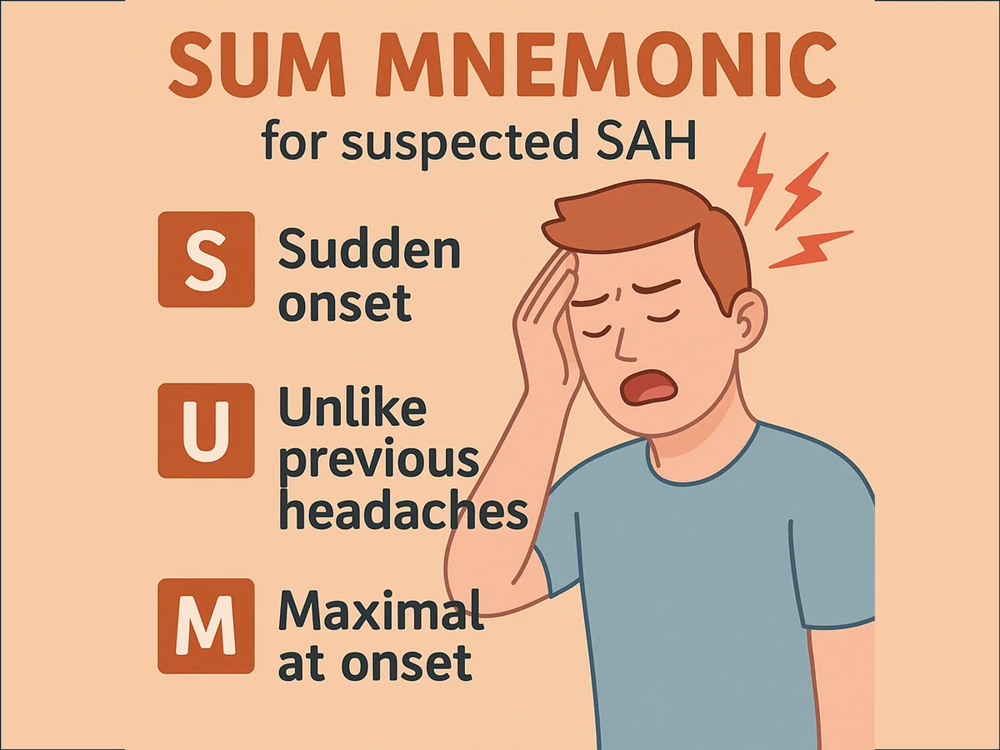
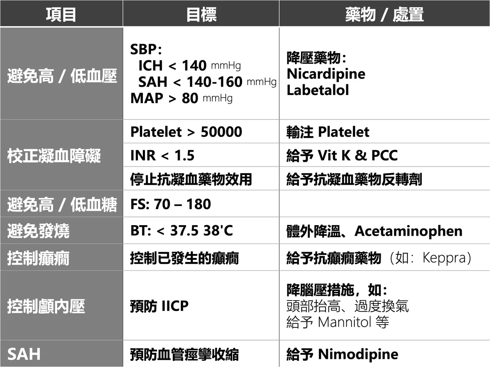
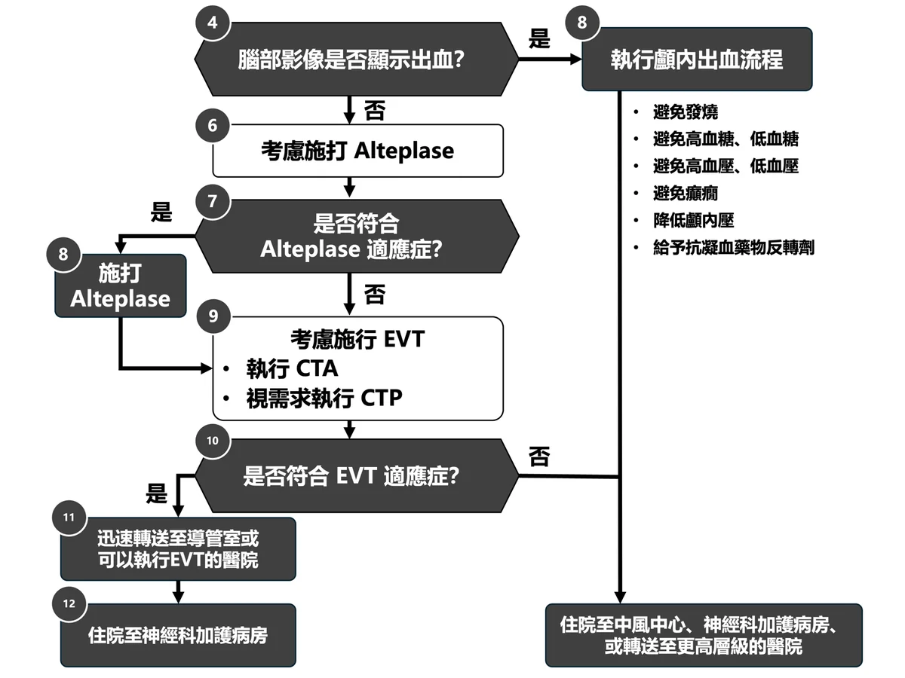
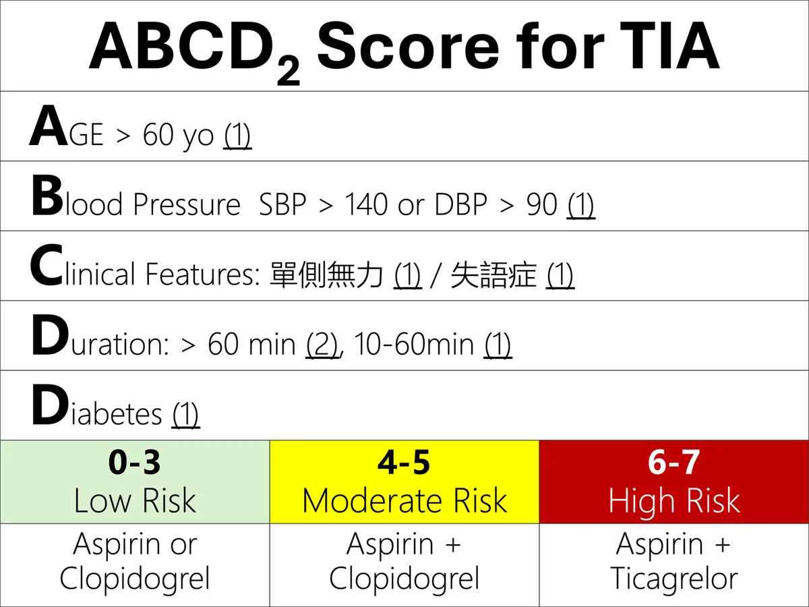
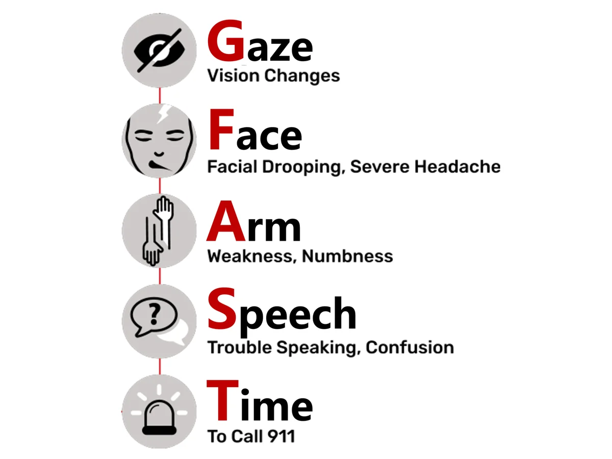
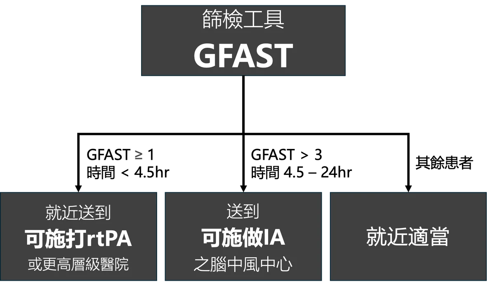

📷 圖示（教案原圖）



📋 情境
68 y/o 女傍晚送至 ED 昏迷狀態、四肢去大腦姿勢。BP 210/120、HR 60、RR 18 irregular。Brain CT：pontine hemorrhage。
🧠 Golden Hour Bundle 6 項
①BP <140/80 ②凝血校正 ③Glucose <180 ④BT <37.5 ⑤癲癇控制 ⑥ICP 控制
🎛 SimPad Plus 設定
Sinus 60 / SpO₂ 92% / irregular RR；插管+osmotic Tx 後切 sinus 75 / SpO₂ 98%；BP control 後切 BP 160/95。
🧰 教具
Brain CT 卡、stroke severity NIHSS 卡、Nicardipine/Labetalol 標示瓶、Golden Hour Bundle 6 項海報。
🎤 開場（30 秒）
橋腦出血預後最差 ── 但 8 分鐘內你做的事決定他能不能走出去。重點：airway、Golden Hour Bundle、誠實預後。
💬 情境引導 / Describe（2 分鐘）
Q1 ACLS Stroke 初步流程？ → 啟動中風團隊+CT、評估 ABC、IV+lab、量血糖、NIHSS+last normal time。Q2 ICH 的 Golden Hour 處置？ → Bundle 6 項：避免高低 BP / 凝血校正 / 避免高低 glucose / 避免發燒 / 控癲癇 / 控 ICP。Q3 BP 控制目標？ → BP < 140/80, MAP > 80。藥物：Nicardipine drip 或 Labetalol IV。 Q4 凝血障礙如何校正？ → Plt < 50000 → 輸血小板；INR ↑ → Vit K + PCC；抗凝劑 → 查表反轉。
🎬 Demo（2 分鐘）— 邊演邊講
GCS 6（去大腦 = M2）→ 不能保護氣道 → 插管。
Pre-RSI BP control（avoid 高峰）：fentanyl + lidocaine 預處理。
RSI Etomidate + Rocuronium；ETCO₂ 30–35 短期 ICP 控制；head up 30°。
BP：Nicardipine 5 mg/hr titrate / Labetalol 10–20 mg IV → 目標 SBP < 140 in 1 hr。
Glucose Insulin → < 180；BT 體外降溫 + Acetaminophen → < 37.5°C。
🏃 情境演練（4 分鐘）
68 y/o 女 ICH，GCS E2V2M3、BP 220/140、HR 110、Glucose 240、BT 38.3、Plt 10000、INR 2.5、Aspirin 使用中。
插管或放 Nasal Airway
Nicardipine/Labetalol → BP < 140/80
Insulin → Glucose < 180
Acetaminophen + 體外降溫 → BT < 37.5
輸 Plt → > 50000；Vit K + PCC → INR < 1.5 Head up 30°、找 NS、找 ICU
✅ Summary（1 分鐘）
腦部 CT 是急性中風處置的分水嶺。ICH 絕對不能 fibrinolytic。Golden Hour Bundle 6 項：BP/凝血/Glucose/BT/癲癇/ICP。BP < 140 mmHg。
🎯 Teaching Key Points
ICH SBP 目標 140（比 ischemic 嚴格）
Pre-RSI 預防 BP 高峰（fentanyl/lidocaine）
Pontine hemorrhage 預後差但流程要對
📚 Reference / 出處
AHA/ASA 2022 ICH Guidelines；INTERACT-2 NEJM 2013;368:2355.
改編自：wayne 教案 §41-Stroke-顱內出血（Golden Hour Bundle）
📋 AHA 8 D's of Stroke Care + 關鍵時間目標
出處：ACLS Provider Manual Part 2 + Lesson Stroke
Detection（症狀辨識）→ Dispatch（撥 119）→ Delivery（EMS 評估、運送、預先通報）
Door（ED 分流）→ Data（評估、實驗室、影像）→ Decision（診斷、治療選擇）
Drug/Device（thrombolytic 或 EVT）→ Disposition（送 stroke unit / ICU）
【關鍵時間目標】General assessment 10 min · Neurologic 20 min · CT/MRI 20 min
CT 判讀 45 min · Thrombolytic 從到院 60 min · 從症狀 3 hr（精選 4.5 hr）
EVT：LVO 患者最長 24 hr（0–6 hr 需 NCCT eligible；6–24 hr 需 penumbra imaging）
【2025 更新】Tenecteplase 加入為 thrombolytic 選項（與 alteplase 並列）
📚 2025 AHA Guidelines 對照（不在 CPR/ECC）
AHA/ASA Stroke Guidelines（獨立文件）
2025 AHA Guidelines for CPR and ECC（這次參考的 12 個 Parts）不涵蓋 stroke 處置 。本題的 ICH 處置內容應對照 AHA/ASA 2022 Guideline for the Management of Patients With Spontaneous Intracerebral Hemorrhage （Greenberg et al, Stroke 2022;53:e282-e361）。
The Golden Hour Bundle 六項 ：屬 Stroke Guidelines 範疇（BP 管理、凝血校正、glucose、體溫、癲癇、ICP）。BP target <140/80 ：對應 INTERACT-2 / ATACH-2 trials 結論，AHA/ASA Stroke Guidelines 推薦中度 ICH SBP 130-150 mmHg。PCC / Vit K / Platelet transfusion 反轉 ：屬 Neurocritical Care Society / Stroke Guidelines 範疇。建議 ：將 stroke guidelines 文件單獨上傳對照（Powers 2019 AIS / Greenberg 2022 ICH / Hoh 2023 SAH）。
出處：2025 American Heart Association Guidelines for CPR and ECC（Circulation 2025;152(suppl 2)）
📕 AHA/ASA Stroke Guidelines 對照（Greenberg 2022）
2022 AHA/ASA Guideline for Spontaneous ICH（Greenberg et al, Stroke 2022;53:e282-e361）
BP 控制 ：本題目標 BP <140/80。Guideline 推薦：SBP 150-220 mmHg 之中度 ICH 急性期，smooth, sustained 控制至 SBP 130-150 （在 6 hr 內達標）COR 2a 。本題的 <140 在範圍內。藥物 Nicardipine / Labetalol / Clevidipine 均推薦 COR 1 。抗凝血劑反轉 ：Warfarin → 4-factor PCC + Vit K COR 1 （速度勝於 FFP）；Dabigatran → Idarucizumab COR 2a ；Factor Xa inhibitor → Andexanet alfa or 4-factor PCC COR 2a 。本題教學一致。血小板輸注 ：⚠️ 重要 Guideline COR 3 (no benefit) 對 routine 抗血小板藥物相關 ICH（依 PATCH trial）。本題「Plt < 50000 → 輸血小板」仍是合理 （thrombocytopenia 是不同情境），但「使用 aspirin 即輸 Plt」就不對。顱內壓控制 ：GCS ≤8 或 hydrocephalus → 考慮 ICP monitoring；Mannitol 1 g/kg 或 3% NaCl 為 hyperosmolar therapy；surgical evacuation for cerebellar hemorrhage >3 cm 或 with hydrocephalus COR 1 。癲癇 ：COR 3 (no benefit) 不常規 prophylaxis；只治療 clinical 或 EEG 確認的 seizures。本題「控制癲癇」表述 OK，但不應預防性給藥。體溫 ：避免 fever（>38°C 早期惡化）；具體 target 未定，但建議 acetaminophen 與外部降溫。Glucose ：避免 hypo (<60) 與顯著 hyper (>180)；本題教學一致。
⚠️ 此區內容由 Claude 訓練知識整理（COR/LOE 為 2022 Guideline 主要建議的合理近似），未核對原文。如要嚴謹引用，請對照原 PDF（Stroke 2022;53:e282-e361 / DOI: 10.1161/STR.0000000000000407）。
出處：見上述 caveat 框內 DOI / Stroke journal 引用。
📖 ACLS Provider Manual 延伸閱讀（2025 版）
pg 42-66 Part 2 / Acute Stroke
8 D's of Stroke Care ：Detection / Dispatch / Delivery / Door / Data / Decision / Drug or Device / Disposition。Provider 核心 Brain imaging（NCCT/MRI）≤20 min after arrival；interpretation ≤45 min。
Hemorrhage 識別 ：CT 看到 hemorrhage = 絕對 contraindication for thrombolytic and EVT → admit to stroke unit / neuro ICU。Provider 核心 Provider 對 hemorrhagic stroke 的明確內容止於此一句：「Hemorrhagic stroke: a blood vessel suddenly ruptures... thrombolytic therapy is contraindicated; avoid anticoagulants.」（pg 31）
Insulin for glucose >180 mg/dL：Provider 列入 general stroke care 。
本題「The Golden Hour Bundle 六項 」「BP <140/80 with Nicardipine for ICH 」「PCC / Vit K / Platelet transfusion 反轉」「Mannitol、體外降溫」Provider 不教 —Provider 的 BP target 只有 thrombolytic candidate <185/110。ICH-specific 治療屬 neurocritical care / 神內。
出處：AHA 2025 ACLS Provider Manual（American Heart Association, ISBN 978-1-68472-295-2）
⚠️ 本題完整內容超出 Provider 課程範圍
AHA 2025 ACLS Provider Manual 對 SAH 的明文內容止於 Table 11 thrombolytic 禁忌欄：「IV alteplase is contraindicated in patients presenting with symptoms and signs most consistent with a subarachnoid hemorrhage.」（pg 60-61）—Provider 不教 SAH 的識別、診斷或處置 。本題的 SUM 口訣、雷擊頭痛 SAH 鑑別、Lumbar Puncture / Xanthochromia、CTA 評估動脈瘤、Nimodipine 預防血管痙攣，均屬 Instructor 等級或神經科專科內容。
📷 圖示（教案原圖）


📋 情境
24 y/o 男在重訓時突發劇烈頭痛、後頸僵硬、複視，意識清楚。BP 160/100。Brain CT 無異常。
🧠 SUM
Sudden onset · Unlike previous · Maximal at onset
🎛 SimPad Plus 設定
Sinus 95 / 正常 SpO₂；BP 160/100 持續；不轉換。
🧰 教具
Brain CT 卡（正常）、LP tray 圖示、xanthochromia 試管圖、CTA 圖（aneurysm）、Nimodipine 標示瓶。
🎤 開場（30 秒）
雷擊頭痛 + 頸僵硬，CT 正常 ── 你會放他回家還是繼續查？這站練：SUM 三特徵 + LP/CTA。
💬 情境引導 / Describe（2 分鐘）
Q1 中風流程啟動後做什麼？ → CT、ABC、IV、Glucose、NIHSS、last normal time。Q2 怎樣的頭痛懷疑 SAH？ → SUM 三特徵：Sudden / Unlike / Maximal。其他：脖子痛、意識變、癲癇、複視。Q3 CT 正常但仍懷疑？ → LP 看 RBC（不降 + xanthochromia）；或直接 CTA。Q4 LP (+) 處置？ → 走顱內出血 Bundle：BP < 140–160（Labetalol/Nicardipine）+ Nimodipine 防 vasospasm + CTA 找 aneurysm。
🎬 Demo（2 分鐘）— 邊演邊講
Hunt-Hess grading（這個 case 約 grade 2）。
問病史：症狀活動（valsalva？）、家族史（PKD、aneurysm）、抽菸/運動/搬重物。
> 6 hr 直接 LP；< 6 hr 也可選 CTA（多中心首選 CTA）。
LP 結果：RBC 50000 in tube 1, 48000 in tube 4（沒降）+ xanthochromia (+) → SAH 確診。
🏃 情境演練（4 分鐘）
35 y/o 大哥搬家時突發劇烈頭痛+頸僵硬，BP 180/110。
啟動 stroke code → CT
懷疑 SAH（SUM 三特徵）
CT 正常 → LP 或 CTA
BT 38.5 → Acetaminophen
BP 195/120 → Labetalol
Glucose 230 → Insulin
癲癇 → Keppra
CTA 評估動脈瘤 → 神經外科
✅ Summary（1 分鐘）
雷擊頭痛 SUM 三特徵；CT 正常仍要 LP。走顱內出血 Bundle + Nimodipine 防 vasospasm。
🎯 Teaching Key Points
CT 6 hr 後 sensitivity 急降 — 不能只信 CT
SUM 三特徵：Sudden/Unlike/Maximal
Nimodipine 是 SAH 標配（防 vasospasm，不是降 BP）
📚 Reference / 出處
AHA/ASA 2023 SAH Guidelines；Lancet Neurol 2017;16:387.
改編自：wayne 教案 §42-Stroke-SAH（SUM 口訣）
📋 AHA 8 D's of Stroke Care + 關鍵時間目標
出處：ACLS Provider Manual Part 2 + Lesson Stroke
Detection（症狀辨識）→ Dispatch（撥 119）→ Delivery（EMS 評估、運送、預先通報）
Door（ED 分流）→ Data（評估、實驗室、影像）→ Decision（診斷、治療選擇）
Drug/Device（thrombolytic 或 EVT）→ Disposition（送 stroke unit / ICU）
【關鍵時間目標】General assessment 10 min · Neurologic 20 min · CT/MRI 20 min
CT 判讀 45 min · Thrombolytic 從到院 60 min · 從症狀 3 hr（精選 4.5 hr）
EVT：LVO 患者最長 24 hr（0–6 hr 需 NCCT eligible；6–24 hr 需 penumbra imaging）
【2025 更新】Tenecteplase 加入為 thrombolytic 選項（與 alteplase 並列）
📚 2025 AHA Guidelines 對照（不在 CPR/ECC）
AHA/ASA SAH Guidelines（獨立文件）
2025 AHA Guidelines CPR/ECC 不涵蓋 SAH 處置 。本題對應 AHA/ASA 2023 Guideline for the Management of Patients With Aneurysmal Subarachnoid Hemorrhage （Hoh et al, Stroke 2023;54:e314-e370）。
CPR/ECC Guidelines 對 SAH 唯一提及：alteplase 對 SAH 為絕對禁忌（在 AIS 章節 contraindication 表）。
SUM 口訣 / 雷擊頭痛 / LP / Xanthochromia / Nimodipine / CTA aneurysm ：均在 AHA/ASA SAH Guidelines 範圍內。
出處：2025 American Heart Association Guidelines for CPR and ECC（Circulation 2025;152(suppl 2)）
📕 AHA/ASA Stroke Guidelines 對照（Hoh 2023）
2023 AHA/ASA Guideline for Aneurysmal SAH（Hoh et al, Stroke 2023;54:e314-e370）
診斷 ：CT 24 hr 內敏感度 >95%；如 CT (-) 仍高度懷疑 → LP 找 RBC + xanthochromia COR 1 。本題教學一致。BP 控制（aneurysm 未夾閉前） ：SBP <160 mmHg 為 reasonable target COR 2a ；藥物 Labetalol / Nicardipine / Clevidipine。動脈瘤治療 ：早期（<24-72 hr）securing aneurysm（coiling 或 clipping）COR 1 ；可同時 coiling 的 ruptured aneurysm 推薦 coiling over clipping COR 1 （ISAT trial）。Vasospasm 預防 ：Nimodipine 60 mg PO q4h × 21 days COR 1 —改善 outcome（不是直接降低 vasospasm 發生率）。本題劑量教學一致。Hydrocephalus ：EVD 或 LP drainage 視臨床決定。Vasospasm 監測與處置 ：TCD 監測；induced hypertension（撤掉降壓藥、給升壓劑）為 first-line；endovascular（balloon angioplasty / IA vasodilator）為 refractory。Seizure prophylaxis ：短期（3-7 days）prophylaxis 在 select 患者 reasonable COR 2b —與 ICH 不同。Statin ：start statin therapy 為 reasonable COR 2b （雖然 trials mixed）。
⚠️ 此區內容由 Claude 訓練知識整理。如要嚴謹引用，請對照原 PDF（Stroke 2023;54:e314-e370 / DOI: 10.1161/STR.0000000000000436）。
出處：見上述 caveat 框內 DOI / Stroke journal 引用。
📖 ACLS Provider Manual 延伸閱讀（2025 版）
pg 60-61 Part 2 / Acute Stroke / Thrombolytic Eligibility
Provider 對 SAH 唯一內容 ：alteplase 對 SAH 為絕對禁忌（COR 3: Harm; LOE C-EO）。一般處置流程仍適用：啟動 stroke team、ABC、IV、glucose、CT/MRI ≤20 min、NIHSS、確認 last known normal time。
出處：AHA 2025 ACLS Provider Manual（American Heart Association, ISBN 978-1-68472-295-2）
⚠️ 本題大部分內容超出 Provider 課程範圍
AHA 2025 ACLS Provider Manual 對 TIA 的明文出現於：「A small percentage of patients with acute stroke or transient ischemic attack have coexisting myocardial ischemia or other abnormalities.」（pg 56）—Provider 提到 TIA 但不教 secondary prevention 。本題的 ABCD2 score、DAPT/SAPT、48 hr 再中風風險、CTA / 心電圖找 embolic source 屬 outpatient neurology / secondary stroke prevention。
📷 圖示（教案原圖）


📋 情境
71 y/o 女，30 min 前突發左肢麻木+左上臂無力+言語不清，到院時症狀完全消失，神經學正常。BP 160/110、HR 88、Hx HTN、AF（warfarin）、DM。
🧠 ABCD² Score
Age ≥60(1) · BP ≥140/90(1) · Clinical(unilateral 2 / speech 1) · Duration(≥60 min 2 / 10–59 1) · DM(1) ≥4 = 高 risk
🎛 SimPad Plus 設定
AF 88 / BP 160/110；不轉換。
🧰 教具
NIHSS、ABCD² Score 卡、CTA/MRI 圖示、warfarin 標示瓶。
🎤 開場（30 秒）
症狀沒了 ── 你會放他回家嗎？TIA 是 stroke 前哨戰。8 分鐘核心：抓出高風險、住院 work-up、不漏 diff。
💬 情境引導 / Describe（2 分鐘）
Q1 會啟動 stroke code 嗎？ → G-FAST > 2 分啟動。 Q2 啟動後做什麼？ → CT、ABC、IV、Glucose、NIHSS、last normal time。CT 沒出血。要不要打 tPA？看症狀。Q3 不打 tPA，下一步？回家嗎？ → 不行。TIA 48 hr 內再中風風險極高，用 ABCD² 評估 + 次級預防。 Q4 怎麼安排？ → CTA/MRA（頸動脈/椎動脈狹窄 → 支架）；ECG/echo（AF → NOAC）；Low Risk + CTA 正常 → 48 hr 返診；否則住院。
🎬 Demo（2 分鐘）— 邊演邊講
算 ABCD²：71y(1) + BP(1) + unilateral weak+speech(2) + 30 min(1) + DM(1) = 6 → 高風險。 NIHSS = 0（症狀已緩解）但 high-risk 不能放回家。
鑑別：seizure / migraine with aura / hypoglycemia。
AF + warfarin → 確認 INR；INR in range 仍發病 → sub-therapeutic 或 LAA thrombus。
🏃 情境演練（4 分鐘）
56 y/o 男 1 hr 前左側無力+麻木+左臉偏癱，BP 180/98，DM+HTN。
啟動 stroke code → CT
ABC、IV、Glucose、NIHSS、last normal time
評估 ABCD² → 給 DAPT/SAPT、住院 or 返家 安排 CTA、ECG
✅ Summary（1 分鐘）
TIA 不是 OK ── 是預警。算 ABCD² + 影像 + AF/carotid 找源頭 + 住院 work-up。Low Risk + CTA 正常才返診。
🎯 Teaching Key Points
症狀沒了還是要住院（48 hr 風險最高）
ABCD² ≥ 4 強烈建議住院 AF + warfarin 仍發病 → sub-therapeutic 或 LAA clot
📚 Reference / 出處
AHA/ASA 2021 TIA / Secondary Prevention；Lancet 2007;370:1432 ABCD².
改編自：wayne 教案 §43-Stroke-TIA
📋 AHA Stroke Lesson — TIA 重點
出處：ACLS Provider Manual Part 2 + Lesson Stroke
【AHA 定義】TIA = 暫時性血流阻斷，症狀通常數分鐘緩解，無永久損傷
【AHA 警示】TIA 是「warning stroke」，預示未來可能 stroke
【AHA 區分關鍵】TIA 與 minor stroke 差別在「無永久損傷」（症狀緩解 + MRI/影像無 acute infarct），而不只是時間
【後續處置】仍走 stroke 流程：CT 排出血 → ABC → IV → glucose → NIHSS → last normal time
【測驗依據】此案 8 分鐘示範屬「Stroke 識別 + secondary prevention 教學」
📚 2025 AHA Guidelines 對照（不在 CPR/ECC）
AHA/ASA Stroke / TIA Guidelines（獨立文件）
2025 AHA Guidelines CPR/ECC 不涵蓋 TIA secondary prevention 。本題對應 AHA/ASA 2021 Guideline for the Prevention of Stroke in Patients With Stroke and Transient Ischemic Attack （Kleindorfer et al, Stroke 2021;52:e364-e467）。
ABCD2 Score / DAPT / SAPT / 48 hr 再中風風險 ：均在 AHA/ASA TIA Guidelines 範圍內。參考 trials: CHANCE / POINT (DAPT)、ABCD-I (Imaging加成)。
出處：2025 American Heart Association Guidelines for CPR and ECC（Circulation 2025;152(suppl 2)）
📕 AHA/ASA Stroke Guidelines 對照（Kleindorfer 2021）
2021 AHA/ASA Guideline for Stroke/TIA Secondary Prevention（Kleindorfer et al, Stroke 2021;52:e364-e467）
DAPT for minor stroke / high-risk TIA ：Aspirin 75-100 mg + Clopidogrel 75 mg × 21 days ，後改 SAPT COR 1 （依 CHANCE / POINT trials）。本題教學一致（DAPT 21 days）。Ticagrelor + Aspirin × 30 days ：另一選項 COR 2a （依 THALES trial）。Long-term SAPT ：Aspirin 75-100 mg、Clopidogrel 75 mg、或 Aspirin/Dipyridamole（任一）COR 1 。BP target ：<130/80 mmHg COR 1 for ischemic stroke / TIA secondary prevention。Statin ：High-intensity statin 達 LDL <70 mg/dL COR 1 （依 SPARCL）。LDL 達標進一步加 ezetimibe / PCSK9i。AF → anticoagulation ：DOAC 優於 warfarin（除 mechanical valve / mod-severe MS）COR 1 。Carotid stenosis 50-99% symptomatic ：CEA 或 CAS（依年齡與風險）COR 1 。ABCD2 score ：⚠️ 注意 2021 Guideline 未明確推薦 ABCD2 用於 routine triage —現代趨勢以 imaging-based risk stratification （diffusion MRI 看 acute infarct、CTA 看 LVO）為主，ABCD2 在臨床仍常用於溝通但不是 Guideline-backed 算法。本題教學中的 ABCD2 屬歷史教學工具 。2-7 day re-stroke risk ：仍是 TIA 處置的核心 urgency rationale；推 admission 或 fast-track outpatient work-up COR 1 。本題教學一致。
⚠️ 此區內容由 Claude 訓練知識整理。ABCD2 在 2021 Guideline 的地位請特別查證。原文：Stroke 2021;52:e364-e467 / DOI: 10.1161/STR.0000000000000375。
出處：見上述 caveat 框內 DOI / Stroke journal 引用。
📖 ACLS Provider Manual 延伸閱讀（2025 版）
pg 56 Part 2 / Acute Stroke
Provider 教的 TIA 相關內容 ：所有疑似中風（含 TIA）患者應 12-lead ECG（找 AF 等 embolic source）；24 hr cardiac monitoring（pg 56）。Stroke 流程：啟動 stroke code → CT ≤20 min → Hemorrhage? → tPA candidate? — TIA 走同一個 algorithm 直到 CT 結果。
症狀 resolved（neurologic function rapidly improving to normal）→ thrombolytic 可能不需要（Manual pg 59）。
出處：AHA 2025 ACLS Provider Manual（American Heart Association, ISBN 978-1-68472-295-2）
⚠️ 本題完整內容超出 Provider 課程範圍
AHA 2025 ACLS Provider Manual 對 IICP 的明文止於 general stroke care：「Monitor the patient for signs of increased intracranial pressure, such as increasing lethargy or decreasing level of consciousness or increased BP with a concurrent decrease in heart rate. Continue to control BP to reduce the potential risk of bleeding.」（pg 65）—Provider 教 IICP 識別，不教階梯式處置 。本題的三階段降腦壓 ladder（環境刺激 → 高滲透壓 → 神經保護插管）、Mannitol / 3% Saline、過度換氣、低溫治療、神經外科開顱，均屬 neurocritical care / 神經外科內容。
📋 情境
55 y/o 男到 ED 昏迷，BP 210/120、HR 55、RR 12 irregular、papilledema (+)。Brain CT：right MCA infarct + edema + midline shift。
🧠 顱內高壓三階段
①預防（環境刺激、穩定 VTS、所有患者）②高滲透壓藥物（Mannitol/3% saline）③神經保護性插管+深度鎮靜+過度換氣／開顱／低溫
🎛 SimPad Plus 設定
Sinus 55 / SpO₂ 92% / irregular RR (Cheyne-Stokes)；插管+osmotic Tx 後切 sinus 70 / SpO₂ 98%。
🧰 教具
Brain CT 卡（large MCA + 8 mm midline shift）、3% saline / Mannitol 標示瓶、stroke team activation 卡、顱內高壓三階段海報。
🎤 開場（30 秒）
Malignant MCA infarct + 早期腦疝。Ischemic 但已到救命階段 ── 不是 tPA 時機，是 ICP 與 hemicraniectomy 時機。
💬 情境引導 / Describe（2 分鐘）
Q1 顱內高壓初步徵兆？ → Cushing's Triad：不規則呼吸 + HTN + brady。Q2 降 ICP 方式？ → 三階段處置（見上）。第一階段所有人都做；第二階段高風險或已 IICP；第三階段藥物治療失敗。 Q3 高滲透壓藥物原理 / 副作用？ → Mannitol / 3% Saline 增血液滲透壓 → 腦水腫消退；副作用利尿、低 BP → 放尿管監測。 Q4 三階段都失敗？ → 神經外科開顱降壓（hemicraniectomy < 60y, < 48 hr → mortality 80% → 30% per DESTINY/DECIMAL）；低溫治療。
🎬 Demo（2 分鐘）— 邊演邊講
插管 RSI；ETCO₂ 30–35 短期 ICP。
Head up 30°、3% saline 250 mL bolus 或 Mannitol 1 g/kg。 BP 不要急降（ischemic 容許 SBP < 220）；急降反而 penumbra ischemia。
Neurosurgery 緊急 consult — hemicraniectomy。
🏃 情境演練（4 分鐘）
55 y/o 男吃飯時突然昏倒，stroke code → CT 顯示左橋腦 25 cc ICH 暫無水腫。預防 IICP 處置？接著 BP 210/120、HR 52、RR 8 → 下一步？再發現中線偏移 → 下一步？
Head up 30°、止痛、止吐、控 BP/SpO₂/BT/Glucose
出現 IICP → Mannitol + 放尿管監測 中線偏移 → 神經保護性插管+深鎮靜+過度換氣+低溫+開顱、住 ICU
台下：兩位扮家屬問「醫師我爸到底會不會好？」— 給結構化答案
✅ Summary（1 分鐘）
Cushing's Triad → 顱內高壓三階段處置。Hemicraniectomy < 60y + < 48 hr 救命（mortality 80% → 30%）。家屬要誠實談 mRS 3–4。
🎯 Teaching Key Points
Ischemic SBP < 220（比 ICH 寬鬆），急降會擴大 infarct
顱內高壓三階段（預防/藥物/手術）
Hemicraniectomy 數字：80% → 30%
📚 Reference / 出處
AHA/ASA 2019 Acute Ischemic Stroke；Lancet Neurol 2007;6:215 DESTINY/DECIMAL meta.
改編自：wayne 教案 §44-Stroke-IICP（三階段處置）
📋 AHA 8 D's of Stroke Care + 關鍵時間目標
出處：ACLS Provider Manual Part 2 + Lesson Stroke
Detection（症狀辨識）→ Dispatch（撥 119）→ Delivery（EMS 評估、運送、預先通報）
Door（ED 分流）→ Data（評估、實驗室、影像）→ Decision（診斷、治療選擇）
Drug/Device（thrombolytic 或 EVT）→ Disposition（送 stroke unit / ICU）
【關鍵時間目標】General assessment 10 min · Neurologic 20 min · CT/MRI 20 min
CT 判讀 45 min · Thrombolytic 從到院 60 min · 從症狀 3 hr（精選 4.5 hr）
EVT：LVO 患者最長 24 hr（0–6 hr 需 NCCT eligible；6–24 hr 需 penumbra imaging）
【2025 更新】Tenecteplase 加入為 thrombolytic 選項（與 alteplase 並列）
📚 2025 AHA Guidelines 對照（Part 11 (HIBI only) / 不在 CPR/ECC for stroke）
Post-CA Care + AHA/ASA Stroke Guidelines
Part 11 Post-CA Care 提到 ICP monitoring in hypoxic-ischemic brain injury (HIBI) （即 cardiac arrest 後腦損傷），不適用於 stroke ICP。本題的 stroke-related IICP（ICH/ischemic stroke 引起）對應 AHA/ASA 2019 Powers et al AIS Guidelines + 2022 Greenberg et al ICH Guidelines 。
三階段降腦壓 ladder（環境刺激 → 高滲透壓 → 神經保護插管） ：屬 Neurocritical Care Society 教學框架。Mannitol 1 g/kg / 3% Saline 250 mL ：劑量在 Stroke Guidelines + Neurocritical Care Society Guidelines。過度換氣 ETCO₂ 30-35 ：短期 IICP rescue therapy，僅作 bridge to definitive treatment（Brain Trauma Foundation Guidelines）。低溫療法 for stroke IICP ：證據力低；Provider/Guidelines 均不建議常規使用。
出處：2025 American Heart Association Guidelines for CPR and ECC（Circulation 2025;152(suppl 2)）
📕 AHA/ASA Stroke Guidelines 對照（Greenberg 2022 + Powers 2019）
2022 ICH Guidelines + 2019 AIS Guidelines / IICP 處置（與 Neurocritical Care Society 合用）
IICP 識別 ：increasing lethargy / decreasing LOC / 增加 BP 合併降低 HR（Cushing reflex）— 兩個 Guidelines 均提及。本題教學一致。三階段 ladder（環境刺激 → 高滲透壓 → 神經保護插管/過度換氣/開顱） ：屬 Neurocritical Care Society 教學框架，AHA/ASA 不直接列為 ladder，但其組成元件均在 Guidelines 內： • 第 1 階段（head up 30°、止痛、止吐、避刺激、穩定 VTS、normothermia）→ ICH/AIS Guidelines 一般 supportive care。
• 第 2 階段（高滲透壓 Mannitol 1g/kg 或 3% NaCl 250 mL bolus）→ ICH Guidelines 列為 hyperosmolar therapy for elevated ICP COR 2a 。劑量教學一致。
• 第 3 階段（神經保護插管、深度鎮靜、過度換氣 ETCO₂ 30-35）→ 過度換氣為 short-term rescue therapy only（<1 hr） ，不可長期使用（會 cerebral vasoconstriction）。Guidelines 引用 Brain Trauma Foundation 立場。
• 開顱 (decompressive craniectomy)：malignant MCA infarction → DECRA / DECIMAL / DESTINY / HAMLET trials 證實 reduced mortality（在 60 歲以下患者更顯著）COR 1 ；cerebellar hemorrhage 或 stroke 引起 hydrocephalus → 急開顱。
低溫療法 (TTM) for stroke IICP ：Guidelines 不常規推薦 （證據不足；EuroHYP-1 trial neutral）。本題教學「考慮 TTM」應加註：實驗性。ICP monitoring ：GCS ≤8 或大面積 stroke 引起 cerebral edema → 考慮 invasive ICP monitor。
⚠️ 此區內容由 Claude 訓練知識整理。三階段 ladder 是教學整合，非 Guideline 直接列出的演算法。原文出處見上。
出處：見上述 caveat 框內 DOI / Stroke journal 引用。
📖 ACLS Provider Manual 延伸閱讀（2025 版）
pg 65 Part 2 / Acute Stroke / Begin General Stroke Care
Provider 教的 IICP 識別 ：increasing lethargy、decreasing LOC、增加 BP 合併降低 HR（Cushing reflex 概念，未明文使用「Cushing's Triad」一詞）。處置原則：control BP to reduce bleeding risk、emergency CT 確認是 edema 還是 hemorrhage、consult neurosurgery as appropriate。
出處：AHA 2025 ACLS Provider Manual（American Heart Association, ISBN 978-1-68472-295-2）
✓ 本題大致對應 Provider 範圍（含一處台灣本地擴充）
本題的「啟動 Stroke Code、量血糖、Last normal time、預先通報、tPA 4.5 hr / IA 24 hr 醫院分流」完全對應 Provider Manual Part 2 / Acute Stroke 之 EMS Acute Stroke Routing Algorithm 。唯一差異：本題用 G-FAST （5 項，含 Gaze + Time），Provider 的標準是 CPSS 三項 （face / arm / speech）+ FAST-ED 五項 （含 Eye deviation / Denial）作為 LVO triage。G-FAST 屬於台灣本地版本，可視為地區擴充。
📷 圖示（教案原圖）


📋 情境
67 y/o 男，18:30 用晚餐時突發暈眩+右側無力。EMT 18:40 抵達現場：意識清、口齒不清、右臉下垂、右上肢無法平舉。呼吸順、脈搏不規則。Hx HTN、DM、AF（未抗凝）。
🧠 G-FAST
Gaze（眼追手指）· Face（露齒微笑）· Arm（兩手抬起，昏迷者看哪邊先落）· Speech（「股市上萬點、台灣走出去」）· Time of last normal
🎛 SimPad Plus 設定
AF 100 / SpO₂ 96% / 正常呼吸；途中保持，到院後 AF 90。
🧰 教具
G-FAST 卡、三醫院選擇情境卡（地區2min/區域10min rtPA/醫學中心50min IA）、SBAR handoff 表。
🎤 開場（30 秒）
今天你是消防分隊待命的 EMT。stroke 鏈條第一棒。8 分鐘核心：G-FAST、scene time < 15 min、送對醫院、預先通報。
💬 情境引導 / Describe（2 分鐘）
Q1 哪些症狀啟動 stroke 流程？ → 半邊肢體/臉無力、口齒不清、步態不穩、頭痛、眩暈。Q2 院前評估流程？ → 穩定 ABC → 啟動中風 → G-FAST → 量血糖排低糖 → 院前通知。SpO₂ > 94 才給 O₂。Q3 G-FAST 怎執行？ → 五字決：Gaze/Face/Arm/Speech/Time。Q4 送哪間醫院？ → tPA window 4.5 hr → 區域以上；IA window 24 hr → 醫學中心。
🎬 Demo（2 分鐘）— 邊演邊講
評估 G-FAST 五項。
取得 last normal time（昨晚幾點睡？）。
Glucose 量測排低糖。
預先通報醫院 → 醫院預啟動 CT + stroke team。
🏃 情境演練（4 分鐘）
EMT 通報：56 y/o 女突然把車停路中央，路人通報 119。意識清、口齒不清、右側 face/muscle 無力、症狀 30 min。BP 160/110、HR 85、SpO₂ 92、Glucose 110。三間醫院：新仁地區 2 min（無 NS）/ 新竹中國醫區域 10 min（rtPA）/ 林口長庚醫學中心 50 min（IA）。要送哪間？
啟動 stroke code 用 G-FAST 評估
取得 last normal time
量血糖（已排除）
院前通知醫院
醫院選擇：在 4.5 hr 內 + LVO 嫌疑 → 直送 IA 中心；否則 rtPA 中心
台下：扮 ED dispatcher 接電話 SBAR
✅ Summary（1 分鐘）
懷疑中風 → 啟動流程 → G-FAST → 量血糖 → 預先通報 → 送對醫院。tPA 4.5 hr / IA 24 hr。
🎯 Teaching Key Points
G-FAST 五字決（台灣版）
Scene time < 15 min；不給 aspirin（未排除出血）
預先通報 = 醫院預啟動 = 省 30 分鐘
📚 Reference / 出處
AHA/ASA 2019 Acute Ischemic Stroke (Stroke 2019;50:e344)；Stroke 2018;49:1116 Mission: Lifeline LVO.
改編自：wayne 教案 §45-Stroke-到院前（G-FAST + 三醫院）
📋 AHA Cincinnati Prehospital Stroke Scale (CPSS) + 8 D's
出處：ACLS Provider Manual Part 2 + Lesson Stroke
【AHA CPSS 三項】1. Facial droop（露齒微笑）2. Arm drift（閉眼雙手抬高）3. Abnormal speech（「You can't teach an old dog new tricks」）
【AHA 數據】1 finding (+) → 72% 機率 stroke；3 findings (+) → > 85% 機率
評估時間：< 1 min
【G-FAST = CPSS + Gaze + Time】台灣本地強化版，與 wayne 一致
【AHA 8 D 第 3 項 Delivery】EMS 須執行：Identify signs / Assess ABC / Complete stroke assessment / Establish time / Transport / Alert hospital / Check glucose
【AHA 醫院選擇】依 stroke severity score 與 local protocols；考慮帶 witness/family 確認時間
📚 2025 AHA Guidelines 對照（Part 4 (兼具)）
2025 AHA Guidelines Systems of Care + AHA/ASA Stroke Guidelines
Part 4 Systems of Care 提到 stroke destination plans，引用 2021 AHA/ASA Prehospital Stroke System of Care Consensus Statement （Jauch et al, Stroke 2021;52:e133-e152）。本題的詳細處置（CPSS/G-FAST、8 D's、tPA 4.5h / IA 24h）對應 AHA/ASA Stroke Guidelines 系列。
EMS Acute Stroke Routing Algorithm ：在 Provider Manual 與 AHA/ASA Stroke Guidelines 都有，本題教學完整對應。G-FAST 仍標為地區擴充：Provider 標準是 CPSS（face/arm/speech），LVO triage 用 FAST-ED（5 項）。
出處：2025 American Heart Association Guidelines for CPR and ECC（Circulation 2025;152(suppl 2)）
📕 AHA/ASA Stroke Guidelines 對照（Powers 2019 + Jauch 2021）
2019 AIS Guidelines + 2021 Prehospital Stroke System of Care Statement
Prehospital stroke screen ：CPSS（face/arm/speech）為 AHA 標準，sensitivity ≈83%。本題的 G-FAST（5 項含 Gaze + Time）為台灣本地改編。LVO triage tool ：FAST-ED 或 LAMS（Los Angeles Motor Scale）≥4 → suspect LVO → 考慮 bypass 至 Thrombectomy-Capable Center。本題未提這個 second-tier triage。Door-to-needle (DTN) target ：≤30 min for top performers（Target: Stroke II/III）；≤45 min standard。Time windows ： • tPA 0-3 hr COR 1 ，3-4.5 hr 限 select COR 1 。
• Tenecteplase 0.25 mg/kg：可選擇（2025 update 為 COR 2a，與 alteplase 等效；TIMELESS trial）。
• EVT 0-6 hr DAWN/DEFUSE-3 select 6-24 hr COR 1 。
BP control for tPA candidate ：<185/110 before；<180/105 × 24 hr after COR 1 。EMS routing ：基於 stroke severity score 與本地 protocol—LVO suspect → 直送 TSC/CSC（如 transport time +15 min 內可達），否則 PSC（最近 tPA-capable）。Prehospital notification ：reduces DTN by ≈ 30 min（well-established in registries）COR 1 。結論 ：本題的 8 D's + last normal time + glucose + 醫院分流邏輯，完全在 AIS Guidelines 範圍內 。G-FAST 為地區改編，要說明 CPSS 是國際標準。
⚠️ 此區內容由 Claude 訓練知識整理。原文：Powers 2019, Stroke 2019;50:e344-e418 / 2025 update Stroke 2025（DOI 待查）；Jauch 2021, Stroke 2021;52:e133-e152。
出處：見上述 caveat 框內 DOI / Stroke journal 引用。
📖 ACLS Provider Manual 延伸閱讀（2025 版）
pg 47-49 Part 2 / Acute Stroke / EMS Critical Assessments
EMS 七項關鍵動作 （Manual 直譯）：Assess ABCs + O₂ if SpO₂ ≤94%；Initiate stroke protocol；Physical exam；Neurologic assessment（CPSS / LAPSS / FAST-ED）；Establish last known normal；Triage to appropriate stroke center；Check glucose；Provide prehospital notification。Provider 核心 CPSS 三項 （Manual Table 4）：Facial droop（露齒微笑）/ Arm drift（雙手抬高 10 sec）/ Abnormal speech（"You can't teach an old dog new tricks"）。1 finding → 72% stroke 機率。FAST-ED 五項 ：Facial palsy / Arm drift / Speech changes / Eye deviation / Denial-neglect。Score ≥4 → suspected LVO → 直送 Thrombectomy-Capable / Comprehensive Stroke Center。Time windows ：tPA 0-3 hr / 3-4.5 hr 嚴選；EVT 0-6 hr stent retriever；6-16 hr DAWN/DEFUSE-3；16-24 hr DAWN（pg 49）。醫院分流四級（Table 5）：ASRH / PSC / TSC / CSC—據 stroke severity score 與本地 protocol 決定。
⚠️ G-FAST ：台灣本地版（Gaze + Face + Arm + Speech + Time），Provider Manual 用 CPSS 為標準三項，加 FAST-ED 為 LVO triage 工具。建議授課時兩種一併講。
出處：AHA 2025 ACLS Provider Manual（American Heart Association, ISBN 978-1-68472-295-2）